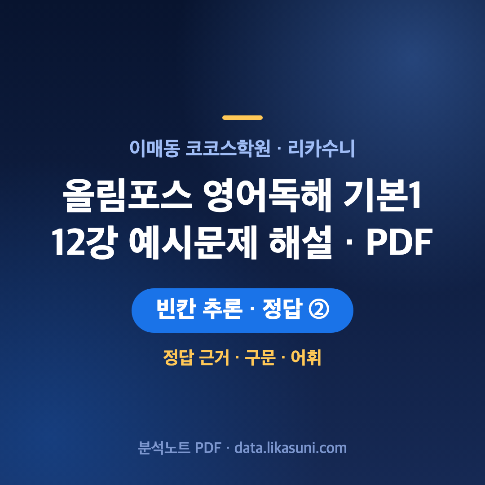
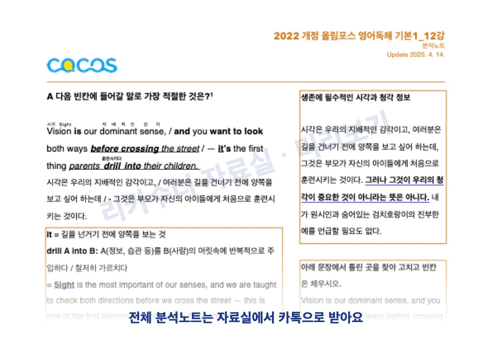

리카수니 분석노트 해설 · 이매동 코코스학원
올림포스 영어독해 기본1 12강 예시문제 빈칸 해설·분석이에요. (2022 개정 올림포스 영어독해 기본1 · 12강 예시문제 · 빈칸 추론 · 정답 ②)
정답 근거, 빈칸 푸는 순서, 구문(drill A into B · so much so that · require + 목적어 + to부정사), 어휘를 정리했고 분석노트 pdf 받는 곳은 글 아래에 있어요.
안녕하세요, 이매동 코코스학원 리카수니 원장입니다.
학생 요청으로 만든 분석노트를 바탕으로 정리했어요. 지문은 교재에 있으니 교재를 펴 놓고 함께 보세요.
| 한눈에 보는 정답 · 교재: 2022 개정 올림포스 영어독해 기본1 (EBS) · 위치: 12강 예시문제 · 유형: 빈칸 추론 (빈칸에 들어갈 말로 가장 적절한 것) · 정답: ② (두 가지 신호를 모두 받는 것이 삶과 죽음을 가를 수 있다) |
시각이 우리의 지배적인 감각이지만, 청각도 생존에 꼭 필요하다는 글이에요.
조용한 전기차가 엔진 소리로 차를 알아채는 보행자·자전거 이용자에게 위험이 되자 저속 전기차에 경고음을 내도록 했다는 예로, 현대 도시에서도 시각·청각 두 신호가 모두 중요하다는 흐름이에요.
| · 근거 1: 시각이 지배적이라는 말 뒤에 But 으로 '그렇다고 청각이 중요하지 않다는 뜻은 아니다'라고 방향을 바꿔요. → 글의 중심은 '청각도 중요하다'. · 근거 2: 보행자와 자전거 이용자는 차를 알아채고 방향을 잡으려고 엔진 소리에 의존해요. · 근거 3: 그래서 저속 전기차에 경고음을 내도록 요구하게 됐어요. → 빈칸 문장은 이 예가 '상기시켜 주는 것'이니, 보는 것(시각)과 듣는 것(청각) 두 신호를 모두 받는 것이 생사를 가를 수 있다는 ②가 정답이에요. |
| · But 뒤 문장이 필자의 진짜 주장이에요. 시각만 강조하는 선택지는 But 앞 내용이라 거르세요. · 전기차 예시는 '소리가 없으면 위험하다'를 보여 줘요. 빈칸 문장 It's a reminder that ~ 은 예시를 한 문장으로 정리하는 자리예요. · 마지막에 '두 가지 신호(both cues)'가 시각+청각을 함께 가리키는지 확인하면 답이 보여요. |

▲ 올림포스 영어독해 기본1 12강 예시문제 빈칸 해설·분석 pdf 분석노트 미리보기
| 1) drill A into B (A를 B에게 반복해서 가르치다, 철저히 주입하다) → it's the first thing parents drill into their children (올림포스 영어독해 기본1 12강 예시문제) (drill 의 목적어 the first thing 이 앞으로 나간 목적격 관계절) 2) that doesn't mean (that) ~ (그렇다고 ~라는 뜻은 아니다) / a big deal = 중요한 것 3) 관계대명사 that vs what: 선행사 something 이 있으면 that (분석노트 어법 문제) 4) depend on A to do (~하기 위해 A에 의존하다) / to detect and orient 병렬 5) so much so that ~ (너무 그래서 ~할 정도다) 6) require + 목적어 + to부정사 (~가 …하도록 요구하다) 7) 동명사 주어 having both cues + can mean / the difference between A and B |
| 영어 | 뜻 |
|---|---|
| dominant | 지배적인 |
| drill A into B | A를 B에게 철저히 가르치다 |
| a big deal | 중요한 것 |
| worn-out | 진부한 (= overused) |
| saber-toothed | 검 모양의 송곳니가 있는 |
| sneak up | 몰래 다가가다 |
| pose a threat | 위협이 되다 |
| unanticipated | 예상치 못한 (= not expected) |
| pedestrian | 보행자 |
| detect | 감지하다, 발견하다 |
| orient to | ~에 방향을 맞추다 |
| slow-moving | 저속으로 움직이는 |
| generate | 만들어 내다 |
| warning noise | 경고음 |
| reminder | 상기시켜 주는 것 |
| cue | 신호 |
| 서술형 대비 분석노트에 문장마다 쉬운 영어로 바꾼 문장(= Sight is the most important of our senses ~)과, 틀린 곳 고치기·빈칸 채우기 문제(정답 포함)를 넣어 두었어요. that/what, generate/to generate 처럼 시험에 잘 나오는 어법 선택도 표시해 두었어요. |
| 📂 올림포스 영어독해 기본1 12강 예시문제 분석노트 pdf 받는 법 끊어 읽기·해석·구문·서술형 문제가 정리된 PDF 는 리카수니 자료실에서 카카오 로그인 후 카톡으로 받을 수 있어요. 같은 교재 다른 강·번호도 같은 페이지에서 요청할 수 있어요. ▶ 분석노트 요청하기 (리카수니 자료실) https://data.likasuni.com/notes/#note-req ※ 출처: 한국교육방송공사(EBS) 2022 개정 올림포스 영어독해 기본1 12강 예시문제. 지문 원문과 선택지, 전체 해석은 싣지 않았어요. |
Q. 올림포스 영어독해 기본1 12강 예시문제 빈칸 해설·분석 정답은?
A. ② (두 가지 신호를 모두 받는 것이 삶과 죽음을 가를 수 있다)
Q. 분석노트 pdf 는 어디서 받나요?
A. 리카수니 자료실(data.likasuni.com)에서 카카오 로그인 후 카톡으로 받을 수 있어요. 위 안내의 링크로 이동하세요.
이상 올림포스 영어독해 기본1 12강 예시문제 빈칸 해설·분석 pdf 정리였어요. 궁금한 점은 댓글로 남겨 주세요.
| 🏫 이매동 코코스학원 안내 분당 이매동 코코스학원은 초등·중등·고등 영어와 수학을 가르쳐요. 모의고사·수능특강·내신 대비가 궁금하시면 편하게 문의해 주세요. · 홈페이지: https://www.cocosedu.co.kr/ · 주소: 경기 성남시 분당구 판교로 476 2층 |
#올림포스영어독해기본1 #올림포스기본1 #올림포스영어독해기본1분석 #올림포스기본112강 #올림포스12강예시문제 #올림포스영어독해 #빈칸추론 #somuchsothat #drillAintoB #EBS영어 #고1영어 #영어분석노트 #이매동영어학원 #코코스학원 #리카수니